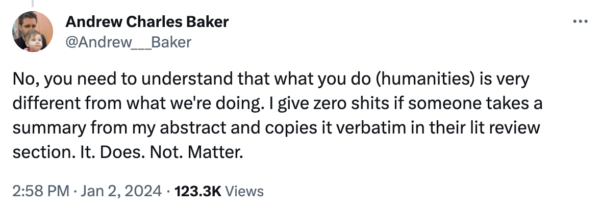
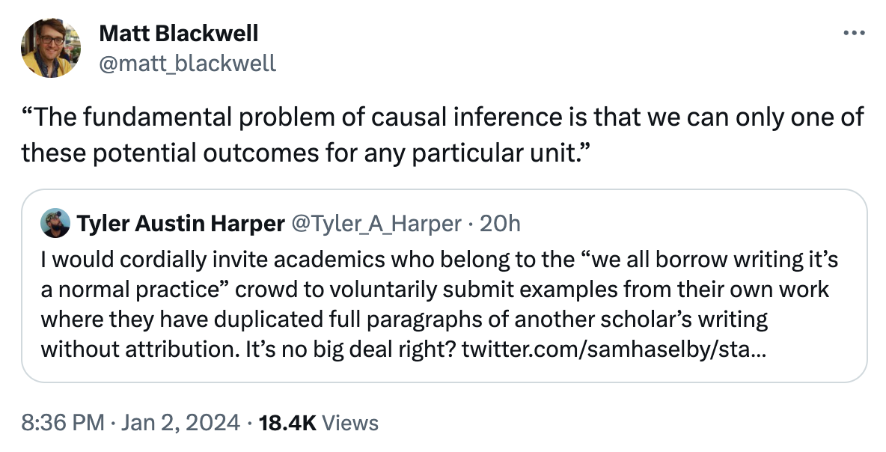

I think it’s important to make the simple point that plagiarism is bad1. I won’t be drawn into specifics of current events which have precipitated this discussion, but there are a lot of academics saying absurd things that I want to publicly disagree with in order to uphold worthwhile norms. This post is less about questions of academic integrity than straightforward questions of what the academic enterprise is.
What are we doing?
First, a digression. Latour and Woolgar (1979) is often credited with the idea that the main thing academics do is publish papers. Our incentive systems are fundamentally built around this idea: if you publish more papers that appear in good journals, you will be more successful. It will cause you to be paid more, have more prestige and, generally, wield more power. I used to think that this meant that what many academics were aiming to do was to simply write more papers. I am increasingly feeling that this is incorrect. Academics want to produce more papers, but they have no interest whatsoever in writing them2.
In the course of events, a major perspective has arisen, probably expressed most forcefully like this:

Andrew is a trained economist who does good empirical work in the way trained economists do it. And, as he is telling you here, he does not care that much about his lit review section. To be a bit more blunt, I think the argument is basically that empirical social scientists aren’t writing papers, we’re producing estimates. We produce a couple of these estimates per paper, and they are the only actual information in the paper. We’re forced to surround these numbers with words because of arcane medieval institutions, but we all recognize that this is absurd and nobody cares about the words, only the numbers. The right way to read a paper is to skip all the textual mumbo-jumbo, look at the charts, see the numbers, then maybe read the methods section if their approach isn’t obvious. This is reflected by the way we do meta-analysis: each paper is one dot on a single forest chart.
To be clear, I think this is a heinous misrepresentation of what we should think of ourselves as doing. If what we were doing actually mattered, I might even say that I think this view is evil.
Ok, but what are we doing?
The work of quantitative social science is to take an irreducibly complex system and reduce some aspect of it down to a 20 page pdf. If we have even the slightest amount of humility, we should instantly understand that this is an impossible task. It is an even more impossible task to reduce that same complex system down to a few quantitative estimates: <20 bits of information3. The reason we have 19.9 pages of text around those numbers is for a few reasons:
- because we’re trying to be humble by acknowledging all of the uncertainty and context around this impossible task
- because we’re trying to acknowledge all of the other human effort that has been put into understanding this aspect of the world before (“standing on the shoulders of giants”)4
The idea that either objective is well served by copying from the abstract of another person’s work is starkly offensive. It brings to mind a conversation I was having about Ian Hacking the other day. One of the truly remarkable things he does in his writing is create fluent and meaningful reviews of complex work by other people. That it is so easy to read is because he takes the time and effort to translate that other work to the specific questions and topics he’s aiming to consider. This is a monumental effort! It requires a detailed understanding of both the task he has set before himself (e.g. “what do we know about what science is?”) and each of the distinct efforts before that touch on this question — including all the myriad ways that those prior efforts failed to answer the fundamental question, answered a slightly different question or otherwise went astray.
Is what we’re doing different than this? Fundamentally, I argue it is not. Unless we are completely faithfully replicating an analysis that has been done before5, we ought to have some fresh perspective we are bringing to the table: the relationship between the current work being performed and what has been done in the past will not be the same as pre-existing work. I think the discussion about copying summaries of papers back and forth completely misses the task. A much better term than “literature review” is, I think, “related work”. It highlights that what is being done in the section is highlighting connections between works. Why on earth would you just provide a generic summary of someone else’s work in your paper? A good summary of related work should be opinionated and it should deal in comparisons: it should be providing a contribution in its own right as a way of synthesizing existing work to come to conclusions about what is known, what isn’t known, and what the strengths and weaknesses are of the existing body of work.
This is obviously not easy, and for shape-rotators like myself, this isn’t exactly work that is always pleasant. But, like, it’s part of the job, man.
I suppose the counter-argument is that time spent working on related work is time not spent working on the quantitative estimates. That’s true, but there are two major counterarguments: (i) the thing we’re producing is the paper, and the related work section is a meaningful fraction of that: Spend the time to make it better. (ii) Specialization means not everyone has to spread their time among all sections in the paper. If you’re doing a shitty job on one part of a paper, add a coauthor that can do a better job on that part6.
In defense of thinking
My point is simple. For historically contingent reasons (not necessarily good reasons), academia has chosen that the primary way that we should communicate is through the medium of the academic paper. Given this choice, I think it’s pretty important that we actually care about what we can communicate through this medium, which has the capacity to share much more than a few quantitative estimates.
An example given by Matt Blackwell7 is illustrative:

This was particularly funny to me because I just wrote a paper where this common boilerplate sentence was probably my most highly edited one through the entire revision process. I will soon publish a broader blogpost around this (now forthcoming) paper, but first I will quote the relevant section:
This relationship closely accords with the definition of calibration in classification and regression problems (Kuleshov et al. 2018), with the added challenge resulting from the fundamental problem of causal inference: Labels (i.e., ITEs) are never observed (Holland 1986).
The bolded sentence roughly accords with Matt’s example of how people usually cite Holland (1986). Crucially, the boilerplate version is not useful for the specific point I wanted to make in this selection! I specifically wanted to indicate (by my use of the very machine-learning term “label” when referring to individual treatment effects) the challenge this well-trodden conceptual problem poses for simple supervised learning. This required different words. It’s my contention that this is almost always the case. If you find yourself repeating something that has been said many times before, maybe you don’t actually need to say it!
We should therefore not normalize the reuse of other people’s words (suited to one particular context, audience and purpose) and re-use them for our own (different!!) context, audience and purpose. I think it is both true that we have sleep-walked into reusing text pretty commonly, as in Matt’s example, and also that we should not do that.
Climbing off the high horse
I recognize that it isn’t always possible to achieve the kind of writing that I’m talking about here. We live in a fallen world. I don’t particularly consider myself a good writer or editor, and everyone faces constraints that lead us to behave in ways that we don’t think are fully consistent with our values. But that doesn’t mean that it’s good or neutral when we make those compromises. It is bad. Plagiarism is bad.
The real problem here is, of course, systemic. We are rewarded for producing as many papers as possible, not particularly for having a well crafted discussion on related work. I do, however, want to at least reinforce the norm here: you should write your own papers, even the parts you don’t like (or get someone else to write them). You should care about writing those sections well, even if they aren’t your favorite part of the paper. They are all part of the work you are signing your name to.
We should not make light of the actual work we do as academics by implying that it is fine to reuse text that is not our own. It is not.
Footnotes
Yes, this is also surprising to me.↩︎
I’m very consciously not talking about GPT here, but, like, also that.↩︎
A single number with 4 decimal precision is equal to log₂(10^4) = 13.3 bits, assume there are a couple of estimates.↩︎
Citation also lets us bypass the hard limits of page limits, too — citations let us gesture at much more complicated ideas than we would be able to fully explain in our particular pdf.↩︎
Even in this case, we are different people than the authors of the replicated work and probably have different opinions about how it relates to the world. At the very least, time has passed and the literature is in a different place!↩︎
Harder to do this on a dissertation which may not be able to be coauthored. But honestly, to a first approximation I’ve only cared about one person’s dissertation (Ferenc Huszár’s).↩︎
I’m taking this example as a jumping off point, I don’t think it’s like, “academic misconduct” to use boilerplate language, and I think his example is a very good one, because tons of people have copied that kind of language.↩︎
Reuse
Citation
@online{dimmery2024,
author = {Dimmery, Drew},
title = {Plagiarism Is Bad},
date = {2024-01-04},
url = {https://ddimmery.com/posts/plagiarism-is-bad},
langid = {en}
}